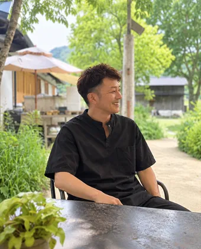
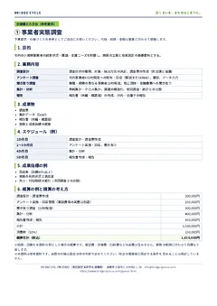

設備投資・
補助金支援
予算で止まった設備商談に、もう一度提案する理由を。使える制度だけでなく、自己負担・資金繰り・発注時期も整理します。
最初の一歩顧客名なしの無料一次診断と、社長に渡せる投資判断シート（見本）
滋賀・京都から、企業と地域の次の一手を。
BUSINESS DESIGN × REAL-WORLD EXECUTION
設備投資の資金計画、地域産業の事業づくり、医院の集客改善。課題を整理するだけで終わらず、次の判断と実行につながる道筋をつくります。

代表 中村裕二元商工会経営指導員。約20年・500社超の経営支援経験（代表個人の通算）※「約20年」「500社超」は代表個人の通算実績であり、2026年設立の当社単独の実績ではありません。
WHAT WE DO / 01 — 03
制度だけ、広告だけ、計画書だけでは終わらない。事業者と地域の判断に必要な材料を揃え、実行へつなぎます。
予算で止まった設備商談に、もう一度提案する理由を。使える制度だけでなく、自己負担・資金繰り・発注時期も整理します。
産業調査、振興計画、創業支援、社会実験。報告書を納めるだけでなく、その後の変化を測れる事業設計を目指します。
看板を設置して終わりにしない。医院を知ってから予約に至るまで、地図・検索・案内表示の取りこぼしを確認します。
※一次診断・相談の範囲は各サービスページでご確認ください。補助金の採択、設備受注、集客成果を保証するものではありません。
SELECTED WORK / 成果物の見本
相談のあとにお渡しするものを、そのまま公開しています。どれも架空の案件で作った見本で、実在の企業・医院の情報ではありません。
実質負担447万円／年間効果250万円／発注は交付決定のあと
社長がその場で決められるよう、結論・実質負担・回収年数・発注の時期をA4・1枚に。
見本を開く →
予算要求や発注にそのまま使える形で。調査の設計から成果の測り方まで、5業務分を公開しています。
事業者実態調査の例を開く →| 診療時間 | マップに未登録 | 高 |
| 予約の入口 | 予約ボタンがない | 高 |
| 来院の案内 | 駐車場の記載なし | 中 |
| 電話番号 | 各媒体で一致 | 不要 |
地図・検索・予約までを点検し、直すべき上位3つを優先度つきでお返しします。問題がなければ「対応不要」と書きます。
見本を見る →※補助金の採択、設備の受注、集客の成果を保証するものではありません。
OUR ORIGIN / OUR FUTURE
BRIDGE CYCLEの原点は、地域の小さな商い。閉店前に次の担い手を探す。新しい商いを、まず小さく試す。企業支援で得た知見を、地域の現場でも実践しています。
LOCAL EXPERIMENTS FROM OTSU, SHIGA商工会の経営指導員として約20年、500以上の事業者の開業・承継・閉店に立ち会ってきました。失敗を避けてきた経験より、失敗を乗り越えてきた経験のほうが役に立つ。だから「失敗しない方法」ではなく、「うまくいかなくても戻れる始め方」と「壊さずに渡せる閉め方」を扱っています。
在職中には、大津市の商工団体向け補助制度を「相談件数」から「支援先の生産性の伸び」で評価する成果連動型へ見直すことを最初に提案し、県・国にも掛け合って実現させました。大津市中小企業・小規模企業振興ビジョンの策定では円卓会議の委員を、策定後も令和6年まで振興推進会議の委員を務めました。公的な仕事の経歴 →
まだ相談するほどではない方へ。小さな商いを始める・続ける・渡す人の話を、ここで書いています。
営業中のお店の内装・厨房設備・什器（造作）を、閉店して壊す前に、同じ場所で開業したい次の店主へ引き継ぐことです。店主は原状回復の工事費を、次の店主は開業の費用を抑えられる可能性があります。くわしくは「退店前承継とは」をご覧ください。
居抜きの仲介や造作の買取は、主に退去が決まってから物件と造作を動かします。退店前承継は、解約を通知する前の営業中から動き、次の店主の開業準備（事業計画・資金計画・融資の申込）まで含めて引き継ぎを整えます。
できます。店舗の物件は解約の予告が数か月前に必要なことが多く、予告を出す前のご相談がいちばん有利です。店の値打ちの試算は匿名で、入力した内容は送信されません。ご相談の秘密は守ります。
相談・試算・登録は0円です。退店前承継は着手金0円で、料金は成約したときだけです。補助金の申請サポートは制度によって異なり、持続化補助金は着手金0円（採択時に補助額の12%）、大型補助金（ものづくり・省力化・新事業進出等）は着手金7万円と採択額の10%です（不採択なら着手金のみ）。店主が登録したお店の詳しい情報（店名・場所・写真）を、店を継ぐ方にお伝えするときは、1店3万円（税別）です。お支払いは、自己資金を当社が確認し、お伝えできると決まったあとです。お伝えしてから14日以内に店主との初回の面談ができなかったときは、全額をお返しします（ご自身の都合で日程が合わなかった場合を除く）。金額はそれぞれのページに載せています（店を閉める方／店を始めたい方／補助金申請サポート）。
個別の支援（退店前承継の成約までの伴走・補助金の申請支援・行政受託）は、滋賀県（大津市を中心に）と京都府です。お店の登録と一覧の閲覧は全国どこからでもできます。ご相談は、LINEのビデオ通話やGoogle Meetでもお受けしています。
できます。国の認定経営革新等支援機関として、事業計画づくり、創業融資の申込、補助金の申請を支援しています。初回のご相談は0円です。
行っていません。賃貸借の契約は大家さんと次の店主が直接結び、内装・設備の代金も当事者どうしで直接やりとりします。当社がお金を預かることはありません。
| 会社名 | BRIDGE CYCLE株式会社 |
|---|---|
| 設立 | 2026年3月17日 |
| 代表者 | 代表取締役 中村 裕二 |
| 所在地 | 〒520-0801 滋賀県大津市におの浜2-1-28 |
| 認定 | 認定経営革新等支援機関（中小企業庁） 認定番号 109825000112 中小企業庁の認定経営革新等支援機関のページから検索して確認できます |
| 所属団体 | 膳所駅前商店街振興組合 賛助会員 |
| 事業内容 | 補助金申請・設備投資の支援（設備販売会社向けの無料一次診断を含む）／自治体・支援機関の産業振興調査・計画策定の受託／退店前承継（店舗の内装・設備の引き継ぎ支援）／創業・事業計画・融資申込の支援／看板広告・集客診断（タドリツク）／売り場レンタル（旧大津公会堂・南草津駅前）／出張料理の仕組みづくり（うちのシェフ）／個人向け診断（わたしのこれから診断） |
| 対応地域 | 滋賀県（大津市を中心に）、京都府 |
| しないこと | 不動産の仲介、医療機器の売買、お客さま・患者さまの情報の受け渡し |
| お問い合わせ | info@bridgecycleco.com／公式LINE @907kxssd 営業のお電話はご遠慮ください。ご相談は、LINEかメールでお受けしています。 |
設備投資・行政業務・医院集客・店舗承継のいずれも、まずは課題をお聞かせください。ご相談内容に応じて、適切な窓口をご案内します。